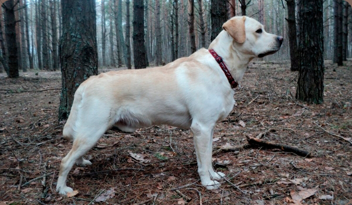

Что может сказать о собаке больше, чем мнение его хозяина? Лабрадор — довольно популярная собака, которую предпочитают держать во многих семьях. Как сказал один владелец, лучшей породы для содержания в доме, где есть дети, не пожелаешь.
Трудно найти более преданное и доброе существо с покладистым характером. Он будет другом и одинокому человеку, и семейной паре, и малышам.
Стандарт породы
Вес: У лабрадоров — кобелей нормальным считается вес от 30 до 36 кг. У сучек — 25-32 кг. Лабрадоры могут быстро набирать вес за счет неправильного питания, а это чревато заболеваниями сердца.
Высота в холке: У кобелей — 56-57 см; У сук — 54-56 см.
Окрас: Стандартными считают три окраса: черный, шоколадный и палевый. Но оттенки этих цветов могут быть весьма разнообразными: светло — шоколадный, печеночный, золотистый, светло-кремовый, рэд фокс. Палевый часто имеет коричнево-печеночную пигментацию. Грудь может украшать белое пятнышко.
Шерсть: Лабрадоры покрыты густой короткой шерстью, не имеющей волн и очесов. На ощупь шерсть кажется жесткой. Водонепроницаемый подшерсток также отличается большой плотностью.
Разновидности породы
Различие между лабрадорами-ретриверами разных окрасов может быть только в цвете. И если говорят, что черные лабрадоры более тяготеют к охоте, палевые отличаются некоторой ленью, а шоколадные — упрямством — это не так.
Первым стандартом этой породы были признаны исключительно черные лабрадоры с глубоким угольным цветом. Позже в линейку стандартов были включены лабрадоры палевого, а затем и шоколадного окраса.
Внешний вид
Лабрадор — довольно крупная и сильная собака с атлетическим телосложением и развитой мускулатурой. Она может работать несколько часов подряд, невзирая даже на плохую погоду. Именно поэтому лабрадора используют в качестве охотничьей собаки, способной в самых сложных условиях долгое время преследовать птицу на воде или дичь в поле.
Это универсальная собака: ее физические данные и устойчивый темперамент позволяют работать как поисковику и поводырю, а интеллект — быть прекрасным компаньоном для хозяев.
Сколько живет лабрадор
Продолжительность жизни может быть разной, но среднестатистический показатель — 10-14 лет. На это влияют качество ухода, правильное питание, разумная физическая нагрузка, а также постоянный ветеринарный контроль.
Достоинства породы
Главное, что отличает лабрадоров и чем можно объяснить любовь к ним хозяев — идеальное состояние психики, сообразительность, привязанность к членам семьи, дружелюбное общение с детьми, умение по интонации человека понять, что он должен сделать, и точно исполнить приказ.
Небольшим недостатком можно назвать любвеобильное отношение ко всем окружающим, в том числе и к незнакомым людям. Значит, в качестве сторожа его использовать нельзя.
Характер
У лабрадора воистину золотой характер. Он готов служить хозяевам всегда и во всем. Его не назовешь телохранителем, но он может быть поводырем, сиделкой, помощником охотника и даже психотерапевтом.
Он не будет лаять без причины, но немедленно отреагирует на подозрительные шумы. Возможно, имеет смысл научить лабрадора команде «голос». Как настоящий ретривер-охотник, с удовольствием принесет хозяину нужную вещь.
Правильно воспитанный лабрадор послушен, легко воспринимает обучение и тренировки, ему не свойственна агрессивная реакция на людей и животных. Более того, он любит детей, отличается ласковым и спокойным отношением к старикам.